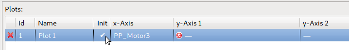
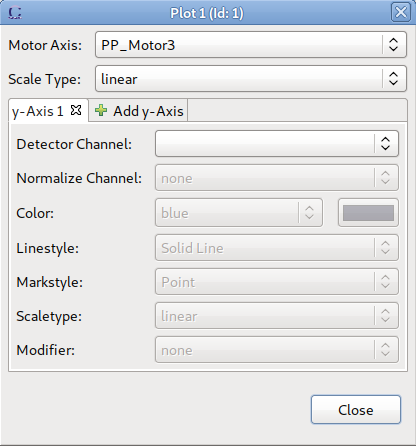

Several properties of a Plot added to a scan module can be modified within the Plot table of the SM Prescan / Postscan / Positioning / Plot View. Editing the different attributes is explained in detail below.
The Id of the plot can be edited by clicking in the column.
Only positive integer values are allowed. If another plot uses the same id, a hint is shown:
The name of the plot (shown as a title in the Plot View) can be edited by clicking in the column:
The init attribute is editable by clicking in the column. Each click toggles the attribute between true and false:

Any of the axes (x-Axis or y-Axes) can be edited by clicking in the corresponding column:
After clicking on the “...” button a dialog appears where all axes can be added, removed and edited:
As long as there are not two y-Axes, a y-Axis can be added by clicking on the “Add y-Axis” Tab:

After a channel is selected, its attributes can be edited:
An existing y-Axis can be removed by clicking on “x” in the corresponding tab: